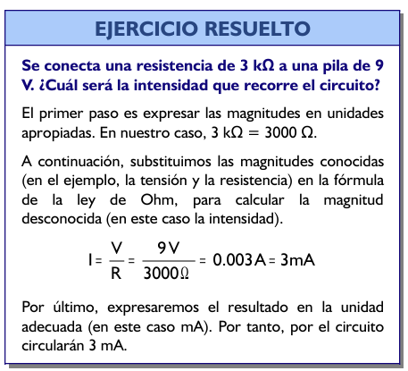
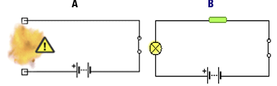
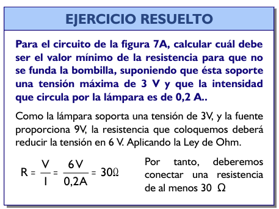
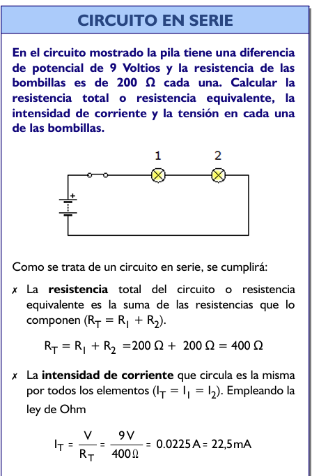
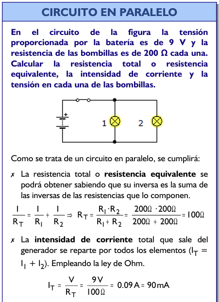
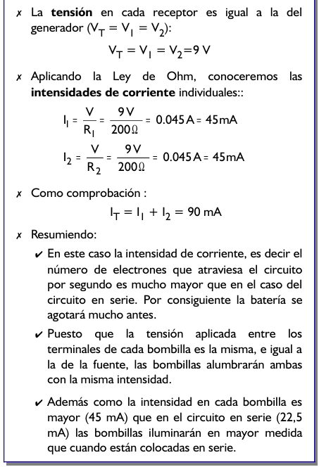

APLICACIONES DE LA LEY DE OHM
La ley de Ohm nos va a permitir conocer la tensión, intensidad o resistencia en cualquier punto del circuito. Vamos a ver algunos ejemplos:

Del ejemplo anterior podemos intuir las funciones de las resistencias. Estas funciones son el limitar y regular la cantidad de corriente que circula por un determinado circuito; y proteger algunos componentes por los que no debe circular una intensidad de corriente elevada. Por ejemplo, si a una pila de 9 V le conectamos directamente una bombilla de 3 V, ésta se fundirá (Figura 7A). Para evitar que se funda, podemos colocar una resistencia en serie con la bombilla para que se quede con, al menos, los 6 V que nos sobran (Figura 7B). Así, sólo le llegarán 3 V a la bombilla.


Los cálculos de las magnitudes en un circuito son relativamente fáciles cuando únicamente se tiene conectado un receptor al generador. Sin embargo, estos cálculos son más complejos cuando se integran dos o más receptores en el mismo circuito, ya que dependen de como estén colocados dichos receptores.


